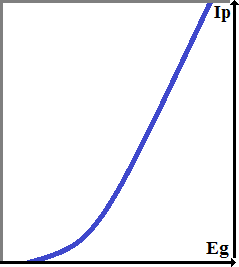
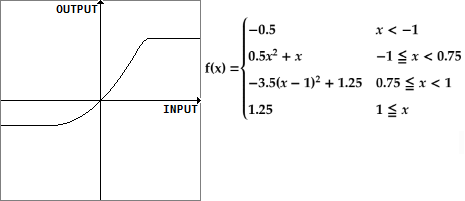
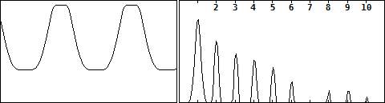
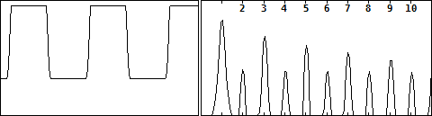
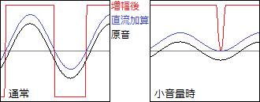
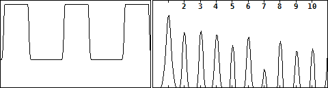

歪みと波形・倍音その10（真空管風デジタル歪み）
2017年12月21日 カテゴリー：歪みと波形・倍音
一般に真空管の歪みは偶数次倍音が多いといわれており、私が作った真空管アンプと真空管エフェクターでもそのような特徴がありました。よって偶数次倍音が奇数次倍音より多くなるような歪みが真空管の歪みに近いと考え、今回の目標とします。前回の記事で紹介したように、入出力の関係を表した関数（伝達関数と呼びます)で信号処理を考えていきます。
真空管のグリッド電圧とプレート電流の関係（Eg-Ip特性）は下図のような形になります。

通常真空管の増幅回路では、グリッド電圧の変化が入力で、プレート電流の変化を出力として取り出します。つまり上図は入出力の関係（＝伝達関数）を大まかに表しています。あまり厳密ではありませんが、なんとなく形が似ている二次関数を使えばよさそうです。また、こちらのページでもx2の項により第2高調波歪が混ざることが記載されています。※後から気づきましたが、指数関数（ex）もたぶん使えます。
以下の伝達関数y=f(x)を考えました。

プラス側は一応少しソフトクリップにしています。波形と倍音は下図です。

うまい具合に偶数次倍音が出ています。
高増幅率時（入力信号を大きくしたとき）の波形と倍音は下図です。

波形がほとんど頭打ち部分で占められるため矩形波に近い形になり、奇数次倍音の方が多くなってしまいました。
各波形の倍音をまとめたときに書きましたが、ハイゲイン時にはデューティ比が0.5でないパルス波の形にする必要があると思われます。そのための一番簡単な方法は直流を足して増幅の中心（バイアス点）をずらすことです。

うまくいきそうに見えましたが、信号が小音量のときは直流成分の影響が大きくなってしまいます。このときはデューティ比が大きくなりすぎ、まともな音になりません。別の方法でバイアス点をずらすことを考えます。
真空管アンプの回路では、大抵数段に渡って増幅されており、段間ではハイパスフィルタ(HPF)を通ることになります。これに倣って『低増幅f(x)→HPF→高増幅f(x)』という2段増幅を行ってみます。計算は省きますが、f(x)ではx2の項により2倍音と直流成分が加えられます。そしてHPFを通ると直流成分が除去され、バイアス点がずれると考えられます。結果は以下のようになりました。

2倍音がやや少ないですが概ねOKでしょう。f(x)をもっと偏った非対称にすれば偶数次倍音がさらに増えてきます。
私自身は真空管が特別好きというわけではありませんが、奇数次倍音と偶数次倍音をある程度コントロールする方法がわかったことは意味があるように思います。あとは各種フィルタを使いこなせれば（簡単ではありませんが）、きっと自分に合った歪みエフェクトをプログラミングできることでしょう。